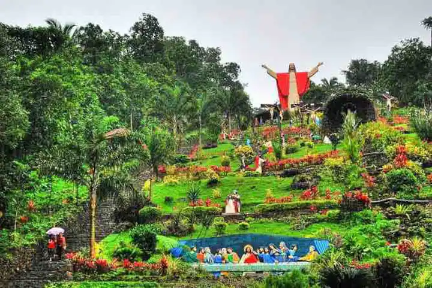
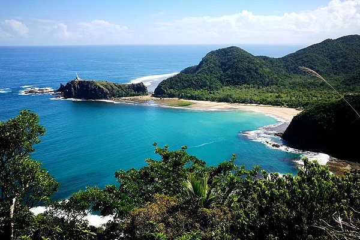
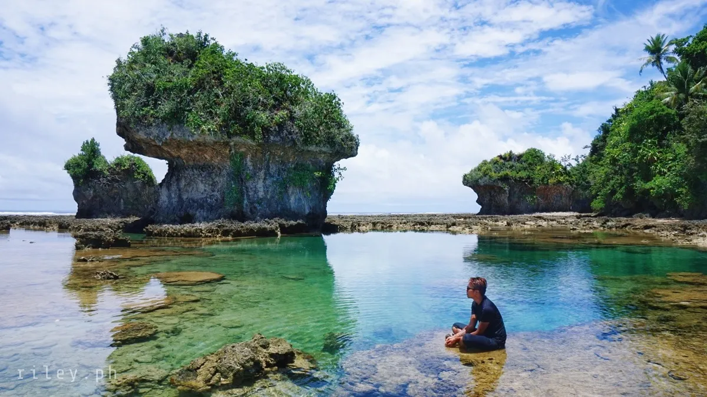

Should visit in the Philippines |
||
|---|---|---|
| Lucban Quezon A small town in the Quezon Province of the Philippines. Despite its size, it is a colorful tourist spot that attracts visitors from all over the country and the world.Known for its vibrant culture and rich history, Lucban offers a unique experience. |
 | |
| Aurora Aurora houses one of the final swaths of lowland tropical rainforest in Luzon, and much of the province is off the beaten track. The towering Sierra Madre mountain range separates Aurora from the central plains of Luzon, and most of the province faces the Pacific Ocean. |
 | Samar Western Samar, is a province in the Philippines located in the Eastern Visayas region. Its capital is the city of Catbalogan. It is bordered by Northern Samar, Eastern Samar, Leyte and Leyte Gulf, and includes several islands in the Samar Sea |
 |